#install.packages("sf")
#install.packages("raster")
#install.packages("spData")
#install.packages("spDataLarge", repos = "https://nowosad.github.io/drat/",type = "source")
library(sf)
library(raster)
library(spData)
library(spDataLarge)|
|
지리 공간 데이터 - 벡터 & 래스터
1 공간 정보 분석 CH2 : Geographic data in R
2 패키지 불러오기
- sf : 지리 공간 벡터 데이터(vector data) 분석을 위한 패키지
- raster : 지리 공간 레스터 데이터(raster data)를 처리 및 분석하는데 사용
- spData : 37개의 지리공간 데이터셋이 내장
- spDataLarge : 지리 공간 데이터 샘플을 내장
3 벡터(Vector) 데이터
3.1 sf 패키지
Edzer Pebesma, Roger Bivand 등이 2016년 10월에 최초로 오픈소스로 공개하였으며, R로 단순 지리특성 기하 (Simple Feature Geometry) 형태로 지리 벡터 데이터를 인코딩하는 표준화된 방법을 지원
sf 패키지는 sp 패키지의 기능을 승계하였으며, 이에 더해 지리공간 데이터를 읽고 쓰는 ‘GDAL’, 지리적 연산을 할 때 사용하는 ‘GEOS’, 지도의 투영 변환(projection conversions)과 데이터 변환(datum transformations)을 위한 ‘PROJ’ 와 R과의 인터페이스를 제공
선택적으로 지리적 좌표에 대한 구면 기하 연산 (spherical geometry operations) 을 위해 ‘s2’ 패키지를 사용
sf 는 모든 벡터 유형(점,선,면, 다각형)을 지원함(raster는 지원하지 않음)
sf 패키지의 장점
- 지리공간 벡터 데이터를 빠르게 읽고 쓸 수 있음
- 지리공간 벡터 데이터 시각화 성능의 고도화(tmap, leaflet, mapview 지리공간 데이터 시각화 패키지가 sf 클래스 지원)
- 대부분의 연산에서 sf 객체는 DataFrame 처럼 처리가 가능함
- sf 함수들은 ‘%>%’ 연산자와 함께 사용할 수 있고, R의 tidyverse 패키지들과도 잘 작동함(sp 패키지도 spdplyr 패키지를 설치하면 dplyr의 %>% 체인 연산자와 기능을 사용할 수 있음)
- sf 함수이름은 ‘st_’ 로 시작하여 상대적으로 일관성이 있고 직관적임
3.2 sf 패키지 확인
- vignetee(package=””) : 비니에트 함수는 설치된 모든 패키지에 대한 이용가능한 모든 목록을 출력
# vignette(package = "sf") # 이용가능 목록 출력
# vignette("sf1") # help창 (소개)- world 데이터셋은 spData에 의해 제공됨
world %>% head()Simple feature collection with 6 features and 10 fields
Geometry type: MULTIPOLYGON
Dimension: XY
Bounding box: xmin: -180 ymin: -18.28799 xmax: 180 ymax: 83.23324
Geodetic CRS: WGS 84
# A tibble: 6 × 11
iso_a2 name_long conti…¹ regio…² subre…³ type area_…⁴ pop lifeExp gdpPe…⁵
<chr> <chr> <chr> <chr> <chr> <chr> <dbl> <dbl> <dbl> <dbl>
1 FJ Fiji Oceania Oceania Melane… Sove… 1.93e4 8.86e5 70.0 8222.
2 TZ Tanzania Africa Africa Easter… Sove… 9.33e5 5.22e7 64.2 2402.
3 EH Western … Africa Africa Northe… Inde… 9.63e4 NA NA NA
4 CA Canada North … Americ… Northe… Sove… 1.00e7 3.55e7 82.0 43079.
5 US United S… North … Americ… Northe… Coun… 9.51e6 3.19e8 78.8 51922.
6 KZ Kazakhst… Asia Asia Centra… Sove… 2.73e6 1.73e7 71.6 23587.
# … with 1 more variable: geom <MULTIPOLYGON [°]>, and abbreviated variable
# names ¹continent, ²region_un, ³subregion, ⁴area_km2, ⁵gdpPercapnames(world) [1] "iso_a2" "name_long" "continent" "region_un" "subregion" "type"
[7] "area_km2" "pop" "lifeExp" "gdpPercap" "geom" plot(world)Warning: plotting the first 9 out of 10 attributes; use max.plot = 10 to plot
all
world_mini <- world[1:2, 1:3]
world_miniSimple feature collection with 2 features and 3 fields
Geometry type: MULTIPOLYGON
Dimension: XY
Bounding box: xmin: -180 ymin: -18.28799 xmax: 180 ymax: -0.95
Geodetic CRS: WGS 84
# A tibble: 2 × 4
iso_a2 name_long continent geom
<chr> <chr> <chr> <MULTIPOLYGON [°]>
1 FJ Fiji Oceania (((-180 -16.55522, -179.9174 -16.50178, -179.7933 …
2 TZ Tanzania Africa (((33.90371 -0.95, 31.86617 -1.02736, 30.76986 -1.…- 기존 sp에 사용되는 공간 데이터는 sf로 변환을 통해 사용 가능
- st_as_sf() : sf로 변환 하는 함수
library(sp)
world_sp <- as(world, Class = "Spatial")
world_sp %>% head() iso_a2 name_long continent region_un subregion
1 FJ Fiji Oceania Oceania Melanesia
2 TZ Tanzania Africa Africa Eastern Africa
3 EH Western Sahara Africa Africa Northern Africa
4 CA Canada North America Americas Northern America
5 US United States North America Americas Northern America
6 KZ Kazakhstan Asia Asia Central Asia
type area_km2 pop lifeExp gdpPercap
1 Sovereign country 19289.97 885806 69.96000 8222.254
2 Sovereign country 932745.79 52234869 64.16300 2402.099
3 Indeterminate 96270.60 NA NA NA
4 Sovereign country 10036042.98 35535348 81.95305 43079.143
5 Country 9510743.74 318622525 78.84146 51921.985
6 Sovereign country 2729810.51 17288285 71.62000 23587.338### sp → sf 변환 : geometry 정보, 컬럼 추가
world_sf <- st_as_sf(world_sp)
world_sf %>% head()Simple feature collection with 6 features and 10 fields
Geometry type: MULTIPOLYGON
Dimension: XY
Bounding box: xmin: -180 ymin: -18.28799 xmax: 180 ymax: 83.23324
Geodetic CRS: WGS 84
iso_a2 name_long continent region_un subregion
1 FJ Fiji Oceania Oceania Melanesia
2 TZ Tanzania Africa Africa Eastern Africa
3 EH Western Sahara Africa Africa Northern Africa
4 CA Canada North America Americas Northern America
5 US United States North America Americas Northern America
6 KZ Kazakhstan Asia Asia Central Asia
type area_km2 pop lifeExp gdpPercap
1 Sovereign country 19289.97 885806 69.96000 8222.254
2 Sovereign country 932745.79 52234869 64.16300 2402.099
3 Indeterminate 96270.60 NA NA NA
4 Sovereign country 10036042.98 35535348 81.95305 43079.143
5 Country 9510743.74 318622525 78.84146 51921.985
6 Sovereign country 2729810.51 17288285 71.62000 23587.338
geometry
1 MULTIPOLYGON (((-180 -16.55...
2 MULTIPOLYGON (((33.90371 -0...
3 MULTIPOLYGON (((-8.66559 27...
4 MULTIPOLYGON (((-132.71 54....
5 MULTIPOLYGON (((-171.7317 6...
6 MULTIPOLYGON (((87.35997 49...- plot 함수를 이용해서 기본 지도 만들기
plot(world[3:6])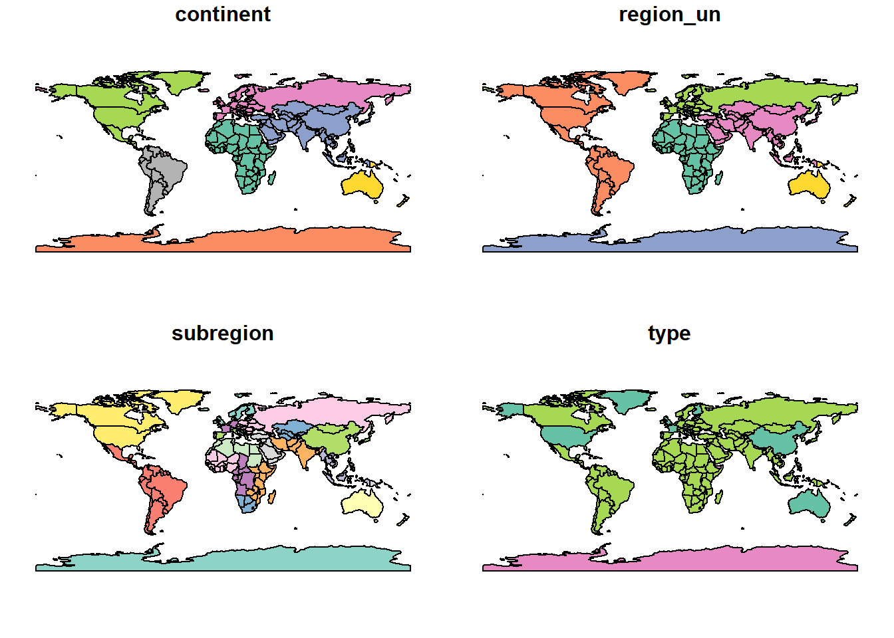
plot(world["pop"])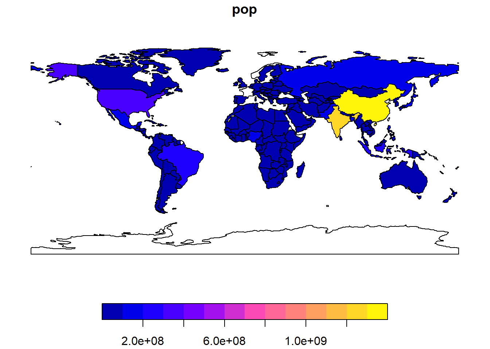
- 다른 지도층을 추가하기
- plot() 함수 내에 add = TRUE 매개변수를 사용하면 나중에 그 위에 다른 지도를 겹쳐서, 즉 층을 추가하여 지도를 덮어쓰기로 그릴 수 있음
- 단, 첫번째 지도 그래프에 키(key)가 있을 경우에는 reset = FALSE 매개변수를 꼭 설정해준 다음에, 이후에 다음번 plot(add = TRUE)를 사용
world_asia = world[world$continent == "Asia", ]
asia = st_union(world_asia) #아시아 국가 합치기
### 아시아만 빨간색으로 표시
plot(world["pop"], reset = FALSE) #reset = FLASE이면 지도 요소를 더 추가할 수 있는 모드로 플롯을 유지
plot(asia, add = TRUE, col = "red")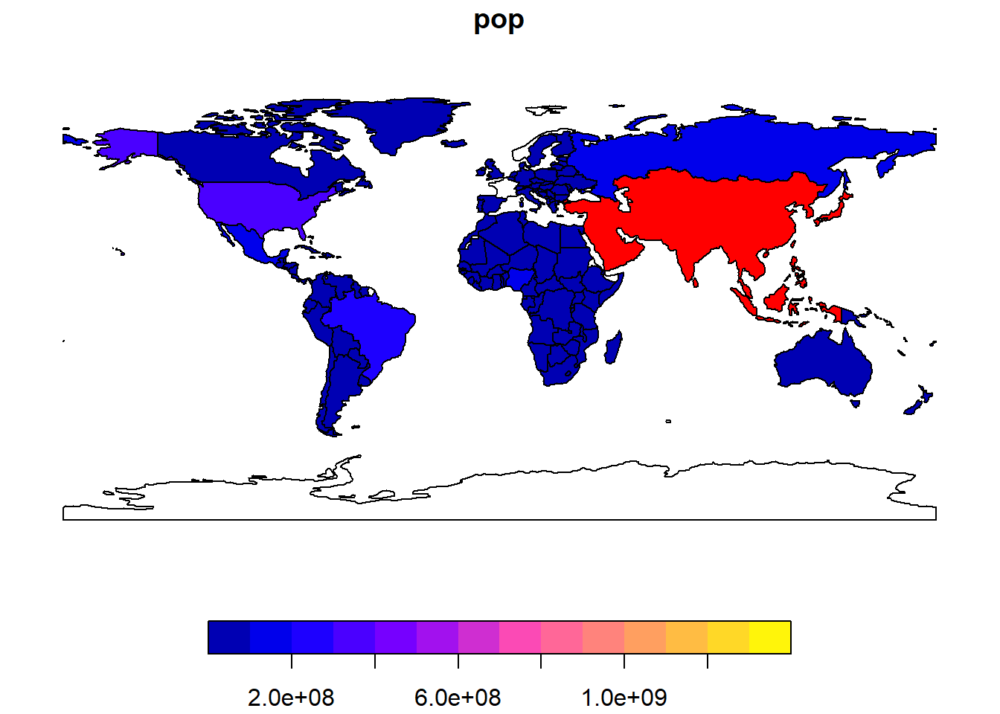
3.3 Base Plot arguments
- 대륙별 중심점에 원을 덮어 씌우기
- st_centroid() : 폴리곤의 중심점을 계산하는 함수
- of_largest = TRUE : if
TRUE, return centroid of the largest (sub)polygon of aMULTIPOLYGONrather than of the wholeMULTIPOLYGON
plot(world["continent"], reset = FALSE)
cex = sqrt(world$pop) / 10000 # pop변수에 제곱근을 취하고 1000으로 나누어서 지도 시각화를 위해 크기를 맞춤
world_cents = st_centroid(world, of_largest = TRUE) # 다각형(국가별) 중앙점 계산Warning: st_centroid assumes attributes are constant over geometriesplot(st_geometry(world_cents), add = TRUE, cex = cex) # 인구크기에 따라 대륙별 중앙점에 원그려넣기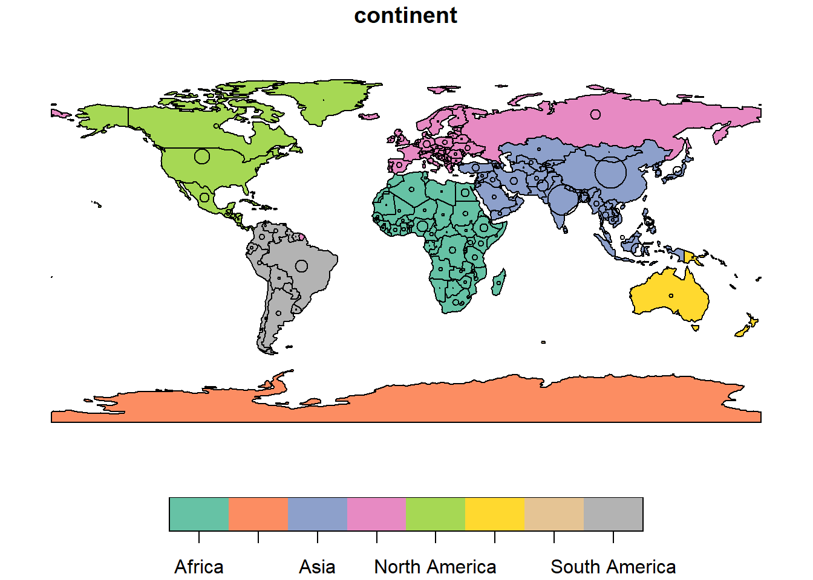
- 특정 나라를 중심으로 확장하여 주변 나라 표시하기
- lwd : 선굵기
- world_asia[0] : 아시아에 대한 geometry column
- expandBB : 각 방향으로 경계 상자를 확장(아래, 왼쪽, 위, 오른쪽)
india = world[world$name_long == "India", ]
plot(st_geometry(india), expandBB = c(0, 0.2, 0.1, 1), col = "gray", lwd = 3)
plot(world_asia[0], add = TRUE)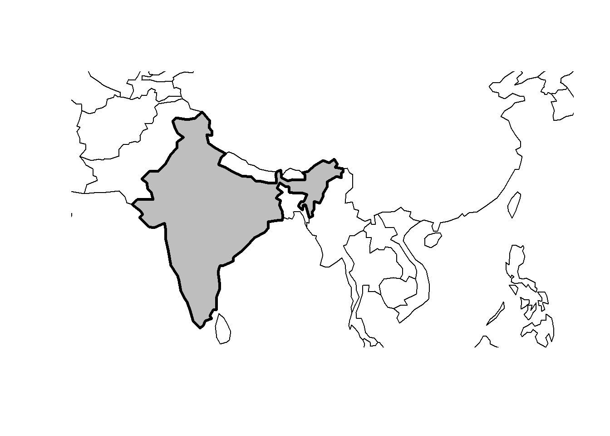
4 Geometry types
- sf 패키지에서 지원하는 17개의 geometry types이 있음
5 Simple feature geometries(sfg)
- sfg는 “Simple Feature Geometries”의 약어로, 공간 데이터의 기하학적 특성을 표현하는 방법 중 하나
- sfg는 지오메트리 객체를 나타내며, 일반적으로 점(Point), 선(Line), 면(Polygon) 등과 같은 기본 기하학적 요소를 포함
- 예를 들어, 도로 네트워크를 나타내는 경우, 각 도로는 점과 선으로 구성된 지오메트리 객체로 표현됨
- R에서 simple feature geometry types
- A point:
st_point() - A linestring:
st_linestring() - A polygon:
st_polygon() - A multipoint:
st_multipoint() - A multilinestring:
st_multilinestring() - A multipolygon:
st_multipolygon() - A geometry collection:
st_geometrycollection()
- A point:
sfgobjects can be created from 3 base R data types:
- A numeric vector : a single point
- A matrix : a set of points, where each row represents a point, a multipoint or linestring
- A list : a collection of objects such as matrices, multilinestrings or geometry collections
5.1 st_point()
st_point(c(5, 2)) # XY pointPOINT (5 2)st_point(c(5, 2, 3)) # XYZ pointPOINT Z (5 2 3)st_point(c(5, 2, 1), dim = "XYM") # XYM pointPOINT M (5 2 1)st_point(c(5, 2, 3, 1)) # XYZM pointPOINT ZM (5 2 3 1)5.2 multipoint (st_multipoint()) and linestring (st_linestring())
### MULTIPOINT
multipoint_matrix <- rbind(c(5, 2), c(1, 3), c(3, 4), c(3, 2))
st_multipoint(multipoint_matrix)MULTIPOINT ((5 2), (1 3), (3 4), (3 2))### LINESTRING
linestring_matrix <- rbind(c(1, 5), c(4, 4), c(4, 1), c(2, 2), c(3, 2))
st_linestring(linestring_matrix)LINESTRING (1 5, 4 4, 4 1, 2 2, 3 2)5.3 list를 사용 : multilinestrings, (multi-)polygons and geometry collections
## POLYGON
polygon_list = list(rbind(c(1, 5), c(2, 2), c(4, 1), c(4, 4), c(1, 5)))
st_polygon(polygon_list)POLYGON ((1 5, 2 2, 4 1, 4 4, 1 5))## POLYGON with a hole
polygon_border = rbind(c(1, 5), c(2, 2), c(4, 1), c(4, 4), c(1, 5))
polygon_hole = rbind(c(2, 4), c(3, 4), c(3, 3), c(2, 3), c(2, 4))
polygon_with_hole_list = list(polygon_border, polygon_hole)
st_polygon(polygon_with_hole_list)POLYGON ((1 5, 2 2, 4 1, 4 4, 1 5), (2 4, 3 4, 3 3, 2 3, 2 4))## MULTILINESTRING
multilinestring_list = list(rbind(c(1, 5), c(4, 4), c(4, 1), c(2, 2), c(3, 2)),
rbind(c(1, 2), c(2, 4)))
st_multilinestring((multilinestring_list))MULTILINESTRING ((1 5, 4 4, 4 1, 2 2, 3 2), (1 2, 2 4))## MULTIPOLYGON
multipolygon_list = list(list(rbind(c(1, 5), c(2, 2), c(4, 1), c(4, 4), c(1, 5))),
list(rbind(c(0, 2), c(1, 2), c(1, 3), c(0, 3), c(0, 2))))
st_multipolygon(multipolygon_list)MULTIPOLYGON (((1 5, 2 2, 4 1, 4 4, 1 5)), ((0 2, 1 2, 1 3, 0 3, 0 2)))## GEOMETRYCOLLECTION
gemetrycollection_list = list(st_multipoint(multipoint_matrix),
st_linestring(linestring_matrix))
st_geometrycollection(gemetrycollection_list)GEOMETRYCOLLECTION (MULTIPOINT ((5 2), (1 3), (3 4), (3 2)), LINESTRING (1 5, 4 4, 4 1, 2 2, 3 2))6 Simple feature columns(sfc)
- 두 개의 지리특성(features)를 하나의 칼럼 객체로 합침
- SFC는 “Simple Feature Columns”의 약어로, 공간 데이터를 표현하는 방법 중 하나
- SFC는 일반적으로 지리 정보 시스템(GIS)에서 사용되며, 지도 및 공간 데이터를 저장하고 분석하는 데 사용됨
- SFC는 일반적으로 공간 데이터를 테이블 형태로 나타내며, 각 행은 하나의 공간 객체를 나타냄
- 예를 들어, 도시의 경계를 포함하는 행정 구역 데이터를 저장할 때, 각 행은 구역의 이름, 인구, 경계 등을 포함하는 속성 데이터와 함께 구역의 경계를 나타내는 지오메트리 데이터를 포함
- sfc와 sfg는 공간 데이터를 다루는 데 사용되는 서로 다른 개념. sfc는 공간 데이터를 저장하고 관리하는 방법을 나타내며, sfg는 공간 데이터의 기하학적 특성을 표현하는 방법을 나타냄
- sfc 공간 데이터를 sfg공간 데이터로 변경할 때 st_sfc() 함수를 사용
- 두개의 단순 지리특성 기하 점(2 sfg points)를 st_sfc() 함수로 한개의 단순 지리특성 칼럼(1 sfc)객체로 합치기
### sfc POINT
point1 <- st_point(c(5, 2))
point1POINT (5 2)point2 <- st_point(c(1, 3))
point2POINT (1 3)points_sfc <- st_sfc(point1, point2)
points_sfcGeometry set for 2 features
Geometry type: POINT
Dimension: XY
Bounding box: xmin: 1 ymin: 2 xmax: 5 ymax: 3
CRS: NAPOINT (5 2)POINT (1 3)- 두개의 단순 지리특성 기하 면(2 sfg polygons)를 st_sfc() 함수로 한개의 단순 지리특성 칼럼(1 sfc) 객체로 합치기
- st_geometry_type() : 기하유형을 확인
### sfc POLYGON
polygon_list1 <- list(rbind(c(1, 5), c(2, 2), c(4, 1), c(4, 4), c(1, 5)))
polygon_list1[[1]]
[,1] [,2]
[1,] 1 5
[2,] 2 2
[3,] 4 1
[4,] 4 4
[5,] 1 5polygon1 <- st_polygon(polygon_list1)
polygon1POLYGON ((1 5, 2 2, 4 1, 4 4, 1 5))polygon_list2 <- list(rbind(c(0, 2), c(1, 2), c(1, 3), c(0, 3), c(0, 2)))
polygon_list2[[1]]
[,1] [,2]
[1,] 0 2
[2,] 1 2
[3,] 1 3
[4,] 0 3
[5,] 0 2polygon2 <- st_polygon(polygon_list2)
polygon2POLYGON ((0 2, 1 2, 1 3, 0 3, 0 2))polygon_sfc <- st_sfc(polygon1, polygon2)
polygon_sfcGeometry set for 2 features
Geometry type: POLYGON
Dimension: XY
Bounding box: xmin: 0 ymin: 1 xmax: 4 ymax: 5
CRS: NAPOLYGON ((1 5, 2 2, 4 1, 4 4, 1 5))POLYGON ((0 2, 1 2, 1 3, 0 3, 0 2))st_geometry_type(polygon_sfc)[1] POLYGON POLYGON
18 Levels: GEOMETRY POINT LINESTRING POLYGON MULTIPOINT ... TRIANGLE### sfc MULTILINESTRING
multilinestring_list1 <- list(rbind(c(1, 5), c(4, 4), c(4, 1), c(2, 2), c(3, 2)),
rbind(c(1, 2), c(2, 4)))
multilinestring_list1[[1]]
[,1] [,2]
[1,] 1 5
[2,] 4 4
[3,] 4 1
[4,] 2 2
[5,] 3 2
[[2]]
[,1] [,2]
[1,] 1 2
[2,] 2 4multilinestring1 <- st_multilinestring((multilinestring_list1))
multilinestring1MULTILINESTRING ((1 5, 4 4, 4 1, 2 2, 3 2), (1 2, 2 4))multilinestring_list2 <- list(rbind(c(2, 9), c(7, 9), c(5, 6), c(4, 7), c(2, 7)),
rbind(c(1, 7), c(3, 8)))
multilinestring_list2[[1]]
[,1] [,2]
[1,] 2 9
[2,] 7 9
[3,] 5 6
[4,] 4 7
[5,] 2 7
[[2]]
[,1] [,2]
[1,] 1 7
[2,] 3 8multilinestring2 <- st_multilinestring((multilinestring_list2))
multilinestring2MULTILINESTRING ((2 9, 7 9, 5 6, 4 7, 2 7), (1 7, 3 8))multilinestring_sfc <- st_sfc(multilinestring1, multilinestring2)
multilinestring_sfcGeometry set for 2 features
Geometry type: MULTILINESTRING
Dimension: XY
Bounding box: xmin: 1 ymin: 1 xmax: 7 ymax: 9
CRS: NAMULTILINESTRING ((1 5, 4 4, 4 1, 2 2, 3 2), (1 ...MULTILINESTRING ((2 9, 7 9, 5 6, 4 7, 2 7), (1 ...st_geometry_type(multilinestring_sfc)[1] MULTILINESTRING MULTILINESTRING
18 Levels: GEOMETRY POINT LINESTRING POLYGON MULTIPOINT ... TRIANGLE- 단순 지리특성 기하 점과 면을 st_sfc() 함수로 합쳐서 한개의 단순 지리특성 칼럼(1 sfc) 객체로 만들기
### sfc GEOMETRY
point_multilinestring_sfc <- st_sfc(point1, multilinestring1)
point_multilinestring_sfcGeometry set for 2 features
Geometry type: GEOMETRY
Dimension: XY
Bounding box: xmin: 1 ymin: 1 xmax: 5 ymax: 5
CRS: NAPOINT (5 2)MULTILINESTRING ((1 5, 4 4, 4 1, 2 2, 3 2), (1 ...st_geometry_type(point_multilinestring_sfc)[1] POINT MULTILINESTRING
18 Levels: GEOMETRY POINT LINESTRING POLYGON MULTIPOINT ... TRIANGLE- sfc 객체는 CRS(coordinate reference systems, 좌표계시스템) 에 대한 정보를 추가로 저장할 수 있음
- 특정 CRS를 지정하기 위해 (a)epsg (SRID)또는(b)proj4string속성을 사용할수 있음
st_crs(points_sfc)Coordinate Reference System: NA6.1 - 좌표계 정보를 추가하는 방법
- epsg 코드를 입력
- epsg 코드 장점
- 짧아서 기억하기 쉬움
- EPSG : European Petroleum Survey Group, 지도 투영과 datums 에 대한 좌표계 정보 데이터베이스를 제공
sfc객체 내에 모든 geometries는 동일한 CRS를 가져야함epsgcode 를4326로 설정- EPSG:4326 → WGS84 경위도: GPS가 사용하는 좌표계
- 서비스: 구글 지구(Google Earth)
- 단위: 소수점 (decimal degrees)
+proj=longlat +ellps=WGS84 +datum=WGS84 +no_defs
### EPSG definition
points_sfc_wgs <- st_sfc(point1, point2, crs = 4326)
st_crs(points_sfc_wgs)Coordinate Reference System:
User input: EPSG:4326
wkt:
GEOGCRS["WGS 84",
ENSEMBLE["World Geodetic System 1984 ensemble",
MEMBER["World Geodetic System 1984 (Transit)"],
MEMBER["World Geodetic System 1984 (G730)"],
MEMBER["World Geodetic System 1984 (G873)"],
MEMBER["World Geodetic System 1984 (G1150)"],
MEMBER["World Geodetic System 1984 (G1674)"],
MEMBER["World Geodetic System 1984 (G1762)"],
MEMBER["World Geodetic System 1984 (G2139)"],
ELLIPSOID["WGS 84",6378137,298.257223563,
LENGTHUNIT["metre",1]],
ENSEMBLEACCURACY[2.0]],
PRIMEM["Greenwich",0,
ANGLEUNIT["degree",0.0174532925199433]],
CS[ellipsoidal,2],
AXIS["geodetic latitude (Lat)",north,
ORDER[1],
ANGLEUNIT["degree",0.0174532925199433]],
AXIS["geodetic longitude (Lon)",east,
ORDER[2],
ANGLEUNIT["degree",0.0174532925199433]],
USAGE[
SCOPE["Horizontal component of 3D system."],
AREA["World."],
BBOX[-90,-180,90,180]],
ID["EPSG",4326]]- PROJ.4 문자열을 직접 입력
- proj4string 장단점
- 투사 유형이나 datum, 타원체 등의 다른 모수들을 구체화할 수 있는 유연성이 있음
- 사용자가 구체화를 해야 하므로 길고 복잡하며 기억하기 어려움
proj4string은 문자열 형식으로 저장되며, 일반적으로 PROJ.4 라이브러리에서 사용하는 형식과 호환됨- 이 문자열에는 좌표계의 이름, 중앙 메리디언, 기준 위도 및 경도, 원점 위도 및 경도, 스케일링 요소 등의 정보가 포함
- 예를 들어, WGS 84 좌표계의
proj4string은 다음과 같이 표시됨
- 예를 들어, WGS 84 좌표계의
proj4string을 변경하면 공간 데이터를 다른 좌표계로 변환 가능
st_transform()함수를 사용하여 다른 좌표계로 변환가능
### PROJ4STRING definition
st_sfc(point1, point2, crs = "+proj=longlat +datum=WGS84 +no_defs")Geometry set for 2 features
Geometry type: POINT
Dimension: XY
Bounding box: xmin: 1 ymin: 2 xmax: 5 ymax: 3
Geodetic CRS: +proj=longlat +datum=WGS84 +no_defsPOINT (5 2)POINT (1 3)7 sf class
위의 위치데이터에 속성데이터(이름, 특정 값, 그룹 등)를 추가
아래 예시는 2017년 6월 21일 런던의 25°C 온도를 나타냄
a geometry (the coordinates), and three attributes with three different classes (place name, temperature and date)
simple feature geometry column (
sfc)에 속성(data.frame)을 나타내는 sf(simple features)의 calss를 합침st_sf()를 이용하여 sfc와 class sf의 객체들을 하나로 통합할 수 있음
lnd_point <- st_point(c(0.1, 51.5))
lnd_point # sfg objectPOINT (0.1 51.5)lnd_geom <- st_sfc(lnd_point, crs = 4326) # sfc object
lnd_geomGeometry set for 1 feature
Geometry type: POINT
Dimension: XY
Bounding box: xmin: 0.1 ymin: 51.5 xmax: 0.1 ymax: 51.5
Geodetic CRS: WGS 84POINT (0.1 51.5)lnd_attrib <- data.frame( # data.frame object
name = "London",
temperature = 25,
date = as.Date("2017-06-21"))
lnd_attrib name temperature date
1 London 25 2017-06-21lnd_sf <- st_sf(lnd_attrib, geometry = lnd_geom) # sf object
lnd_sfSimple feature collection with 1 feature and 3 fields
Geometry type: POINT
Dimension: XY
Bounding box: xmin: 0.1 ymin: 51.5 xmax: 0.1 ymax: 51.5
Geodetic CRS: WGS 84
name temperature date geometry
1 London 25 2017-06-21 POINT (0.1 51.5)lnd_sf %>% class()[1] "sf" "data.frame"sfg(simple feature geometry) 를 만듬CRS(좌표계시스템)를 가지는
sfc(simple feature geometry column)으로 전환st_sf()를 이용하여data.frame에 저장된 속성 정보와sfc를 통합
8 래스터 (Raster) data
지리적 레스터 데이터 모델은 래스터 헤더와 일반적으로 동일한 간격의 셀(픽셀)을 나타내는 matrix로 구성됨
- Raster header : 좌표 참조 시스템(CRS, Coordinate Reference System), 시작점(the origin)과 범위 (the extent)를 정의함
- 헤더는 열 수, 행 수 및 셀 크기 해상도를 통해 범위를 정의
- 셀의 ID를 사용하여 각 단일 셀에 쉽게 접근하고 수정
- 행렬 (matrix) : 동일한 크기의 픽셀 또는 셀(pixel, or cell)을 표현. 픽셀 ID(pixel IDs)와 픽셀 값(pixel values)
- Raster header : 좌표 참조 시스템(CRS, Coordinate Reference System), 시작점(the origin)과 범위 (the extent)를 정의함
원점(또는 시작점)은 종종 행렬의 왼쪽 아래 모서리 좌표(R의 래스터 패키지는 기본적으로 왼쪽 위 모서리를 사용)
래스터 레이어의 셀에는 단일 값(숫자 또는 범주)만 포함
9 An introduction to raster
raster package는 R에서 raster objects을 만들고, 읽고, 내보내고, 조작 및 처리하기 위한 광범위한 기능을 제공
래스터 개념을 설명하기 위해 spDataLarge의 데이터 세트를 사용
Zion National Park(미국 유타) 지역을 덮는 몇 개의 래스터 개체와 하나의 벡터 개체로 구성
srtm.tif은 이 지역의 디지털 표고 모델
#install.packages("rgdal")
library(rgdal)
#install.packages("spDataLarge",repos = "https://nowosad.github.io/drat/",type = "source") #지리공간 데이터 샘플을 내장
#install.packages("raster")
library(spDataLarge)
library(raster)
raster_filepath <- system.file("raster/srtm.tif", package = "spDataLarge")
raster_filepath[1] "C:/Users/seong taek/AppData/Local/R/win-library/4.2/spDataLarge/raster/srtm.tif"new_raster <- raster(raster_filepath)
new_rasterclass : RasterLayer
dimensions : 457, 465, 212505 (nrow, ncol, ncell)
resolution : 0.0008333333, 0.0008333333 (x, y)
extent : -113.2396, -112.8521, 37.13208, 37.51292 (xmin, xmax, ymin, ymax)
crs : +proj=longlat +datum=WGS84 +no_defs
source : srtm.tif
names : srtm
values : 1024, 2892 (min, max)# 클래스(class)
# 차원(dimentions)
# 해상도(resolution)
# 범위(extent)
# 좌표 참조 시스템 (Coordinates Reference System)
# 출처(Source)
# 이름(names)
# 최소/최대 값(min, max values) 속성 정보
### rgdal 설치 error발생시 rgdal 설치및로드 필요9.1 Functions
dim(): returns the number of rows, columns and layersncell(): function the number of cells (pixels)res(): the raster’s spatial resolutionextent(): its spatial extentcrs(): coordinate reference systeminMemory(): reports whether the raster data is stored in memory (the default) or on disk
dim(new_raster)[1] 457 465 1ncell(new_raster)[1] 212505extent(new_raster)class : Extent
xmin : -113.2396
xmax : -112.8521
ymin : 37.13208
ymax : 37.51292 crs(new_raster)Coordinate Reference System:
Deprecated Proj.4 representation: +proj=longlat +datum=WGS84 +no_defs
WKT2 2019 representation:
GEOGCRS["unknown",
DATUM["World Geodetic System 1984",
ELLIPSOID["WGS 84",6378137,298.257223563,
LENGTHUNIT["metre",1]],
ID["EPSG",6326]],
PRIMEM["Greenwich",0,
ANGLEUNIT["degree",0.0174532925199433],
ID["EPSG",8901]],
CS[ellipsoidal,2],
AXIS["longitude",east,
ORDER[1],
ANGLEUNIT["degree",0.0174532925199433,
ID["EPSG",9122]]],
AXIS["latitude",north,
ORDER[2],
ANGLEUNIT["degree",0.0174532925199433,
ID["EPSG",9122]]]] inMemory(new_raster)[1] FALSE# help("raster-package")10 Basic map making
- sf package와 같이 raster 역시
plot()함수 사용 가능
plot(new_raster)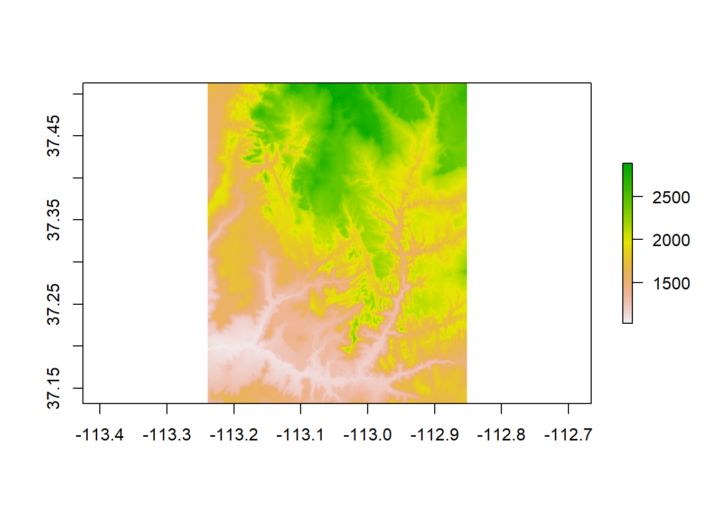
11 Raster classes
3가지의레스터 클래스(Raster Classes)의 특장점
(1) RasterLayer class
(2) RasterBrick class
(3) RasterStack class
11.1 1. RasterLayer class
RasterLayerclass는 래스터 객체 중에서 가장 간단한 형태의 클래스이며, 한개의 층으로 구성되어 있음RasterLayer Class 객체를 만드는 가장 쉬운 방법은 기존의 RasterLayer Class 객체 파일을 읽어오는 것
- 아래 예에서는 raster 패키지의 raster() 함수를 사용해서 spDataLarge 패키지에 내장되어 있는 srtm.tif 레스터 층 클래스 객체를 읽어와서 raster_layer 라는 이름의 단 한개의 층만을 가진 RasterLayer Class 객체를 만듬
- nlayers() 함수로 층의 개수를 살펴보면 ’1’개 인 것을 확인할 수 있습니다.
raster_filepath <- system.file("raster/srtm.tif", package = "spDataLarge")
raster_filepath[1] "C:/Users/seong taek/AppData/Local/R/win-library/4.2/spDataLarge/raster/srtm.tif"new_raster <- raster(raster_filepath)
new_rasterclass : RasterLayer
dimensions : 457, 465, 212505 (nrow, ncol, ncell)
resolution : 0.0008333333, 0.0008333333 (x, y)
extent : -113.2396, -112.8521, 37.13208, 37.51292 (xmin, xmax, ymin, ymax)
crs : +proj=longlat +datum=WGS84 +no_defs
source : srtm.tif
names : srtm
values : 1024, 2892 (min, max)### number of layers
nlayers(new_raster)[1] 1- RasterLayer 클래스 객체를 raster() 함수를 사용해서 처음부터 직접 만들 수도 있음
- 8개의 행과 8개의 열, 총 64개의 셀(픽셀)을 가진 RasterLayer 클래스를 직접 만들기
- 레스터 객체의 좌표 참조 시스템(CRS, Coordinates Reference System)은 WGS84 가 기본 설정값(해상도(resolution)의 단위가 도 (in degrees))
- res = 0.5 로서 해상도를 0.5도로 설정
- 각 셀의 값은 왼쪽 상단부터 시작하여, 행 방향(row-wise)으로 왼쪽에서 오른쪽으로 채워짐
my_raster <- raster(nrows = 8, ncols = 8, res = 0.5,
xmn = -2.0, xmx = 2.0, ymn = -2.0, ymx = 2.0, vals = 1:64)
my_rasterclass : RasterLayer
dimensions : 8, 8, 64 (nrow, ncol, ncell)
resolution : 0.5, 0.5 (x, y)
extent : -2, 2, -2, 2 (xmin, xmax, ymin, ymax)
crs : +proj=longlat +datum=WGS84 +no_defs
source : memory
names : layer
values : 1, 64 (min, max)## plotting
plot(my_raster, main = "my raster (64 cells = 8 rows * 8 cols)") 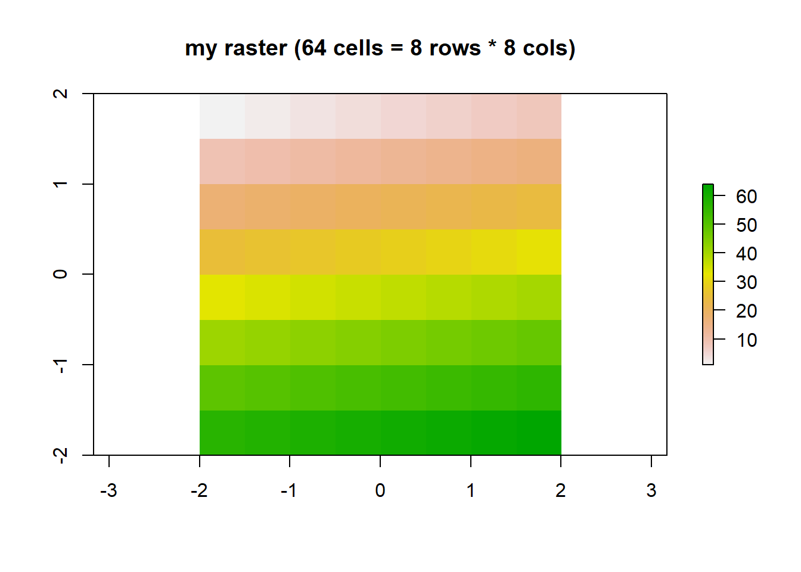
11.2 2. RasterBrick class
RasterBrickandRasterStack클래스는 여러 개의 층(multiple layers)을 가질 수 있음특히,
RasterBrick클래스는 단일 다중 스펙트럼 위성 파일 (a single multispectral satellite file) 이나 또는 메모리의 단일 다층 객체 (a single multilayer object in memory)의 형태로 다층의 레스터 객체를 구성아래의 예는 raster 패키지의
brick()함수를 사용해서 spDataLarge 패키지에 들어있는 landsat.tif 의 다층 레스터 파일을RasterBrick클래스 객체로 불러온 것nlayers(): the number of layers stored in aRaster*object
multi_raster_file <- system.file("raster/landsat.tif", package = "spDataLarge")
multi_raster_file[1] "C:/Users/seong taek/AppData/Local/R/win-library/4.2/spDataLarge/raster/landsat.tif"r_brick <- brick(multi_raster_file)
r_brickclass : RasterBrick
dimensions : 1428, 1128, 1610784, 4 (nrow, ncol, ncell, nlayers)
resolution : 30, 30 (x, y)
extent : 301905, 335745, 4111245, 4154085 (xmin, xmax, ymin, ymax)
crs : +proj=utm +zone=12 +datum=WGS84 +units=m +no_defs
source : landsat.tif
names : landsat_1, landsat_2, landsat_3, landsat_4
min values : 7550, 6404, 5678, 5252
max values : 19071, 22051, 25780, 31961 nlayers(r_brick)[1] 4plot(r_brick) #plotting RasterBrick object with 4 layers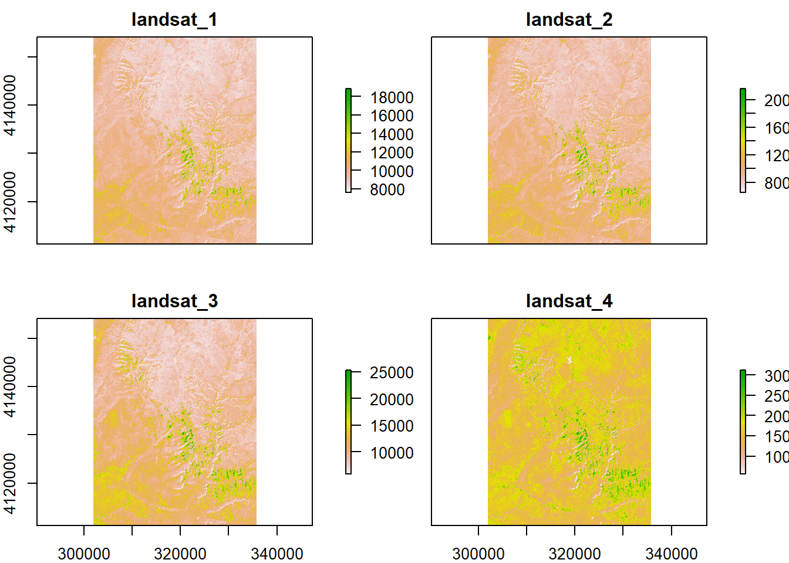
11.3 3. RasterStack class
다 층 (multi-layers) 레스터 객체로 구성
같은 범위와 해상도를 가진 여러개의
RasterLayer클래스 객체들을 리스트로 묶어서RasterStack클래스 객체를 만듬RasterBrick클래스가 동일한 복수개의RasterLayer층으로 구성되는 반면에,RasterStack클래스는 여러개의RasterLayer와RasterBrick클래스 객체가 혼합되어서 구성할 수 있음연산 속도면에서 보면 일반적으로
RasterBrick클래스가RasterStack클래스보다 빠름아래 예시
- raster(raster_brick, layer = 1) 함수를 사용해서 위에서 불러왔던 RasterBrick 클래스 객체의 1번째 층만 가져다가 raster_on_disk 라는 이름으로 레스터 객체를 하나 만듬
- raster() 함수로 동일한 범위와 해상도, 좌표 참조 시스템(CRS)를 가지고 난수로 셀의 값을 채운 raster_in_memory 라는 이름의 메모리에 있는 RasterLayer 클래스 객체를 만듬
- seq_len(n) : 1부터 n까지 입력(1씩 커짐)
- 다음에 stac() 함수로 raster_stack = stack(raster_in_memory, raster_on_disk) 처럼 (a) + (b) 하여 쌓아서 raster_stack 라는 이름의 RasterStack 클래스 객체를 만듬
- 마지막으로 plot() 함수로 RasterStack 클래스 객체에 쌓여 있는 2개의 객체를 시각화 (raster_in_memory 는 난수를 발생시켜 셀 값을 채웠기 때문에 시각화했을 때 아무런 패턴이 없음)
raster_on_disk <- raster(r_brick, layer = 1)
raster_on_diskclass : RasterLayer
band : 1 (of 4 bands)
dimensions : 1428, 1128, 1610784 (nrow, ncol, ncell)
resolution : 30, 30 (x, y)
extent : 301905, 335745, 4111245, 4154085 (xmin, xmax, ymin, ymax)
crs : +proj=utm +zone=12 +datum=WGS84 +units=m +no_defs
source : landsat.tif
names : landsat_1
values : 7550, 19071 (min, max)raster_in_memory = raster(xmn = 301905, xmx = 335745,
ymn = 4111245, ymx = 4154085,
res = 30)
raster_in_memoryclass : RasterLayer
dimensions : 1428, 1128, 1610784 (nrow, ncol, ncell)
resolution : 30, 30 (x, y)
extent : 301905, 335745, 4111245, 4154085 (xmin, xmax, ymin, ymax)
crs : NA values(raster_in_memory) <- sample(seq_len(ncell(raster_in_memory)))
crs(raster_in_memory) = crs(raster_on_disk) #같은 좌표 입력
r_stack <- stack(raster_in_memory, raster_on_disk)
r_stackclass : RasterStack
dimensions : 1428, 1128, 1610784, 2 (nrow, ncol, ncell, nlayers)
resolution : 30, 30 (x, y)
extent : 301905, 335745, 4111245, 4154085 (xmin, xmax, ymin, ymax)
crs : +proj=utm +zone=12 +datum=WGS84 +units=m +no_defs
names : layer, landsat_1
min values : 1, 7550
max values : 1610784, 19071 plot(r_stack)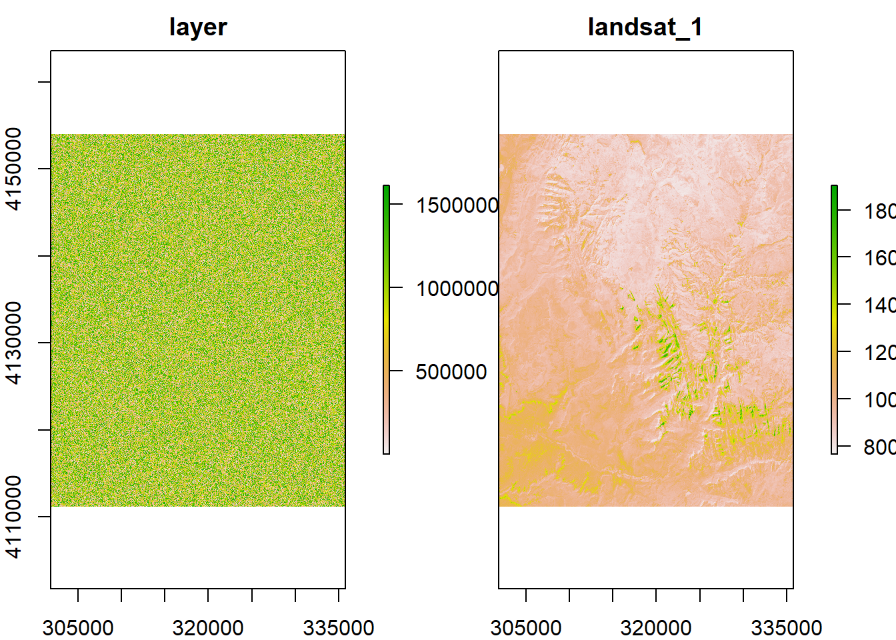
11.4 언제 어떤 래스터 클래스를 사용하는 것이 좋은가?
하나의 다층 레스터 파일이나 객체(a single multilayer file or object)를 처리하는 것이라면 RasterBrick 이 적합
반면에, 여러개의 래스터 파일들(many files)이나 여러 종류의 레스터 클래스를 한꺼번에 연결해서 연산하고 처리해야 하는 경우라면 RasterStack Class 가 적합
12 Coordinate Reference Systems
13 CRS(Coordinate Reference Systems)
- 지리 공간 데이터 분석에서 가장 기본이 되고 또 처음에 확인을 해보아야 하는 좌표계, 좌표 참조 시스템(CRS, Coordinate Reference Systems)에 대한 소개
- 지리 좌표계 (Geographic Coordinate Reference Systems)
- 투영(투사) 좌표계 (Projected Coordinate Reference Systems)
14 CRS in R
R에서 좌표계를 표현할 때는 (a) epsg 코드 (epsg code)나 또는 (b)proj4string 정의 (proj4string definition)를 사용
R에서 CRS를 설명하는 두 가지 주요 방법은(a)
epsg코드 또는(b)proj4string정의epsg코드- 일반적으로 더 짧으므로 기억하기 쉬움
- 또한 이 코드는 잘 정의된 좌표 참조 시스템을 하나만 참조
proj4string정의- 투영 유형, 데이텀 및 타원체와 같은 다양한 매개변수를 지정할 때 더 많은 유연성을 얻을 수 있음
- 다양한 투영을 지정하고 기존 투영을 수정할 수 있음 (이것은 또한
proj4string접근 방식을 더 복잡하게 만듬)
벡터 데이터의 좌표계
- 벡터 지리 데이터에 대해서는 sf 패키지의 ****
st_crs()함수를 사용해서 좌표계를 확인 - spDataLarge 패키지에 들어있는 Zion 국립 공원의 경계를 다각형면(Polygon)으로 나타내는 zion.gpkg 벡터 데이터를 st_read() 함수로 불러와서,
st_crs()함수로 좌표계를 조회
- 벡터 지리 데이터에 대해서는 sf 패키지의 ****
library(sf)
vector_filepath <- system.file("vector/zion.gpkg", package = "spDataLarge")
vector_filepath[1] "C:/Users/seong taek/AppData/Local/R/win-library/4.2/spDataLarge/vector/zion.gpkg"new_vector <- st_read(vector_filepath)Reading layer `zion' from data source
`C:\Users\seong taek\AppData\Local\R\win-library\4.2\spDataLarge\vector\zion.gpkg'
using driver `GPKG'
Simple feature collection with 1 feature and 11 fields
Geometry type: POLYGON
Dimension: XY
Bounding box: xmin: 302903.1 ymin: 4112244 xmax: 334735.5 ymax: 4153087
Projected CRS: UTM Zone 12, Northern Hemispherenew_vectorSimple feature collection with 1 feature and 11 fields
Geometry type: POLYGON
Dimension: XY
Bounding box: xmin: 302903.1 ymin: 4112244 xmax: 334735.5 ymax: 4153087
Projected CRS: UTM Zone 12, Northern Hemisphere
UNIT_CODE
1 ZION
GIS_Notes
1 Lands - http://landsnet.nps.gov/tractsnet/documents/ZION/Metadata/zion_metadata.xml
UNIT_NAME DATE_EDIT STATE REGION GNIS_ID UNIT_TYPE CREATED_BY
1 Zion National Park 2017-06-22 UT IM 1455157 National Park Lands
METADATA
1 https://irma.nps.gov/App/Reference/Profile/2181118#Zion National Monument
PARKNAME geom
1 Zion POLYGON ((314945.2 4115910,...## st_read() : read vector dataset in R sf package
st_crs(new_vector) # get CRSCoordinate Reference System:
User input: UTM Zone 12, Northern Hemisphere
wkt:
BOUNDCRS[
SOURCECRS[
PROJCRS["UTM Zone 12, Northern Hemisphere",
BASEGEOGCRS["GRS 1980(IUGG, 1980)",
DATUM["unknown",
ELLIPSOID["GRS80",6378137,298.257222101,
LENGTHUNIT["metre",1,
ID["EPSG",9001]]]],
PRIMEM["Greenwich",0,
ANGLEUNIT["degree",0.0174532925199433]]],
CONVERSION["UTM zone 12N",
METHOD["Transverse Mercator",
ID["EPSG",9807]],
PARAMETER["Latitude of natural origin",0,
ANGLEUNIT["degree",0.0174532925199433],
ID["EPSG",8801]],
PARAMETER["Longitude of natural origin",-111,
ANGLEUNIT["degree",0.0174532925199433],
ID["EPSG",8802]],
PARAMETER["Scale factor at natural origin",0.9996,
SCALEUNIT["unity",1],
ID["EPSG",8805]],
PARAMETER["False easting",500000,
LENGTHUNIT["Meter",1],
ID["EPSG",8806]],
PARAMETER["False northing",0,
LENGTHUNIT["Meter",1],
ID["EPSG",8807]],
ID["EPSG",16012]],
CS[Cartesian,2],
AXIS["(E)",east,
ORDER[1],
LENGTHUNIT["Meter",1]],
AXIS["(N)",north,
ORDER[2],
LENGTHUNIT["Meter",1]]]],
TARGETCRS[
GEOGCRS["WGS 84",
DATUM["World Geodetic System 1984",
ELLIPSOID["WGS 84",6378137,298.257223563,
LENGTHUNIT["metre",1]]],
PRIMEM["Greenwich",0,
ANGLEUNIT["degree",0.0174532925199433]],
CS[ellipsoidal,2],
AXIS["latitude",north,
ORDER[1],
ANGLEUNIT["degree",0.0174532925199433]],
AXIS["longitude",east,
ORDER[2],
ANGLEUNIT["degree",0.0174532925199433]],
ID["EPSG",4326]]],
ABRIDGEDTRANSFORMATION["Transformation from GRS 1980(IUGG, 1980) to WGS84",
METHOD["Position Vector transformation (geog2D domain)",
ID["EPSG",9606]],
PARAMETER["X-axis translation",0,
ID["EPSG",8605]],
PARAMETER["Y-axis translation",0,
ID["EPSG",8606]],
PARAMETER["Z-axis translation",0,
ID["EPSG",8607]],
PARAMETER["X-axis rotation",0,
ID["EPSG",8608]],
PARAMETER["Y-axis rotation",0,
ID["EPSG",8609]],
PARAMETER["Z-axis rotation",0,
ID["EPSG",8610]],
PARAMETER["Scale difference",1,
ID["EPSG",8611]]]]좌표계가 비어있거나 잘못 입력되어 있는 경우
**st_set_crs(vector_object,EPSG code)** 구문으로 좌표계를 설정할수 있음**st_set_crs()**함수는 좌표계를 변경하는 것이 투영 데이터를 변환하는 것은 아니며, 투영 데이터 변환을 하려면 st_transform() 함수를 이용
## -- st_set_crs() : setting a CRS (coordinate reference system)
new_vector_2 <- st_set_crs(new_vector, 4326) # set CRS with EPSG 4326 codeWarning: st_crs<- : replacing crs does not reproject data; use st_transform for
thatnew_vector_2Simple feature collection with 1 feature and 11 fields
Geometry type: POLYGON
Dimension: XY
Bounding box: xmin: 302903.1 ymin: 4112244 xmax: 334735.5 ymax: 4153087
Geodetic CRS: WGS 84
UNIT_CODE
1 ZION
GIS_Notes
1 Lands - http://landsnet.nps.gov/tractsnet/documents/ZION/Metadata/zion_metadata.xml
UNIT_NAME DATE_EDIT STATE REGION GNIS_ID UNIT_TYPE CREATED_BY
1 Zion National Park 2017-06-22 UT IM 1455157 National Park Lands
METADATA
1 https://irma.nps.gov/App/Reference/Profile/2181118#Zion National Monument
PARKNAME geom
1 Zion POLYGON ((314945.2 4115910,...# 경고 메세지 확인- 래스터 데이터에서 좌표계
- 레스터 모델의 객체에 대해서는 raster 패키지의
projection()함수를 사용해서 좌표계를 확인하거나 설정
- 레스터 모델의 객체에 대해서는 raster 패키지의
## -- raster::projection() : get or set CRS in raster* objects
library(raster)
raster_filepath = system.file("raster/srtm.tif", package = "spDataLarge")
raster_filepath[1] "C:/Users/seong taek/AppData/Local/R/win-library/4.2/spDataLarge/raster/srtm.tif"new_raster = raster(raster_filepath)
new_rasterclass : RasterLayer
dimensions : 457, 465, 212505 (nrow, ncol, ncell)
resolution : 0.0008333333, 0.0008333333 (x, y)
extent : -113.2396, -112.8521, 37.13208, 37.51292 (xmin, xmax, ymin, ymax)
crs : +proj=longlat +datum=WGS84 +no_defs
source : srtm.tif
names : srtm
values : 1024, 2892 (min, max)projection(new_raster) # get CRS in raster objects # [1] "+proj=longlat +datum=WGS84 +no_defs"[1] "+proj=longlat +datum=WGS84 +no_defs"- 레스터 데이터에 대해서 좌표계를 새로 설정할 때도 역시 projection()함수를 사용
new_raster3 <- new_raster
new_raster3class : RasterLayer
dimensions : 457, 465, 212505 (nrow, ncol, ncell)
resolution : 0.0008333333, 0.0008333333 (x, y)
extent : -113.2396, -112.8521, 37.13208, 37.51292 (xmin, xmax, ymin, ymax)
crs : +proj=longlat +datum=WGS84 +no_defs
source : srtm.tif
names : srtm
values : 1024, 2892 (min, max)projection(new_raster3) <- "+proj=utm +zone=12 +ellps=GRS80 +towgs84=0,0,0,0,0,0,0
+units=m +no_defs" # set CRS
new_raster3class : RasterLayer
dimensions : 457, 465, 212505 (nrow, ncol, ncell)
resolution : 0.0008333333, 0.0008333333 (x, y)
extent : -113.2396, -112.8521, 37.13208, 37.51292 (xmin, xmax, ymin, ymax)
crs : +proj=utm +zone=12 +ellps=GRS80 +units=m +no_defs
source : srtm.tif
names : srtm
values : 1024, 2892 (min, max)벡터 데이터의 경우 좌표계를 설정할 때 ‘EPSG 코드’나 ’Proj4string 정의’ 모두 사용 가능한 반면에, 레스터 데이터는 ’Proj4string 정의’만 사용
중요한 것은
st_crs()및projection()함수는 좌표의 값이나 지오메트리를 변경하지 않음
15 Unit(단위)
좌표계 (CRS) 정보 안에 들어있는 공간의 단위 (Spatial Units)
지도를 제작하거나 볼 때 측정 단위 (measurement units)가 미터(meters) 인지 혹은 피트(feets) 인지 명시적으로 표현하고 정확하게 확인할 필요
벡터의 지리적 데이터나 레스터의 픽셀에서 측정되는 단위라는 맥락(context)를 알 수 있고, 실제 지표면과 지도 표현 간의 관계, 거리를 알 수 있고, 또 거리나 면적 등을 계산할 수 있음
- 지리공간 벡터 데이터의 측정 단위(Units in Vector data)
sf 객체의 지리공간 벡터 데이터는 단위에 대해서 native support 이여서, 다른 외부 모듈이나 확장 프로그램을 설치하지 않아도 sf 객체 내에 단위가 들어가 있음
그래서 sf 객체 벡터 데이터에 대해서 연산을 하게 되면 units 패키지에 의해 정의된 “단위 속성”도 같이 반환해주어서 단위로 인한 혼란을 미연에 방지할 수 있음(대부분의 좌표계는 미터(meters)를 사용하지만, 일부는 피트(feets)를 사용하기 때문에 단위가 혼란스러울 수 있음. raster 패키지는 단위가 native support가 아님.)
- R의 spData 패키지에 들어있는 “world” 데이터셋을 활용하여 Luxembourgd와 대한민국의 벡터 데이터를 가져와서, st_area()함수로 면적을 계산
- sf 패키지의 st_area() 함수로 벡터 데이터의 면적으로 계산 하면, 결과값의 뒤에 [m^2] 이라고 해서 2차원 공간 상의 “제곱미터” 단위가 같이 반환
library(spData)
names(world) [1] "iso_a2" "name_long" "continent" "region_un" "subregion" "type"
[7] "area_km2" "pop" "lifeExp" "gdpPercap" "geom" luxembourg = world[world$name_long == "Luxembourg", ]
luxembourgSimple feature collection with 1 feature and 10 fields
Geometry type: MULTIPOLYGON
Dimension: XY
Bounding box: xmin: 5.674052 ymin: 49.44267 xmax: 6.242751 ymax: 50.12805
Geodetic CRS: WGS 84
# A tibble: 1 × 11
iso_a2 name_long conti…¹ regio…² subre…³ type area_…⁴ pop lifeExp gdpPe…⁵
<chr> <chr> <chr> <chr> <chr> <chr> <dbl> <dbl> <dbl> <dbl>
1 LU Luxembourg Europe Europe Wester… Sove… 2417. 556319 82.2 93655.
# … with 1 more variable: geom <MULTIPOLYGON [°]>, and abbreviated variable
# names ¹continent, ²region_un, ³subregion, ⁴area_km2, ⁵gdpPercapsouth_korea = world[world$name_long == "Republic of Korea", ]
south_koreaSimple feature collection with 1 feature and 10 fields
Geometry type: MULTIPOLYGON
Dimension: XY
Bounding box: xmin: 126.1174 ymin: 34.39005 xmax: 129.4683 ymax: 38.61224
Geodetic CRS: WGS 84
# A tibble: 1 × 11
iso_a2 name_long conti…¹ regio…² subre…³ type area_…⁴ pop lifeExp gdpPe…⁵
<chr> <chr> <chr> <chr> <chr> <chr> <dbl> <dbl> <dbl> <dbl>
1 KR Republic … Asia Asia Easter… Sove… 99044. 5.07e7 81.7 33426.
# … with 1 more variable: geom <MULTIPOLYGON [°]>, and abbreviated variable
# names ¹continent, ²region_un, ³subregion, ⁴area_km2, ⁵gdpPercapplot(south_korea)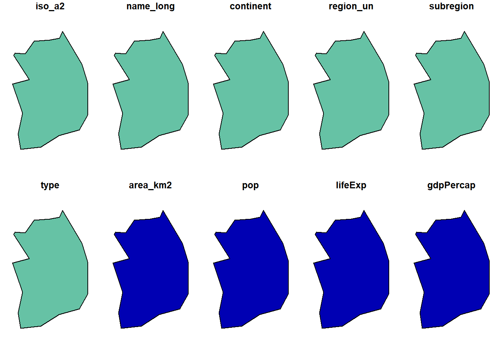
plot(south_korea[1])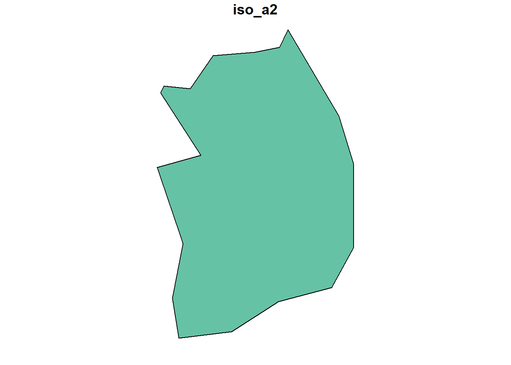
st_area(luxembourg) 2408817306 [m^2]st_area(south_korea)99020196082 [m^2]면적 단위가 [m^2] 이다보니 결과값의 자리수가 너무 길게 표현됨
계산의 단위를 “제곱킬로미터[km^2]로 변경하려면 units 패키지의
set_units(st_object, units)함수로 단위를 설정할 수 있음기존의 면적 단위인 ‘제곱미터(m^2)’ 로 계산된 결과값을 1,000,000 으로 나누게 되면 결과값은 맞더라도 단위가 ‘제곱미터(m^2)’ 로 그대로여서, 우리가 원하던 단위인 ‘제곱킬로미터(km^2)’ 가 아니게 되므로 주의가 필요
- 지리공간 래스터 데이터의 측정 단위(Units in Raster data)
벡터 데이터를 다루는 sf 패키지는 단위가 native support 여서 조회나 계산 결과를 반환할 때 단위(units)를 속성으로 반환
하지만 레스터 데이터를 다루는 raster 패키지는 단위에 대해서 native support 가 아니므로, 단위에 대해서 혼란스러울 수 있으므로 조심해야 함
- spDataLarge 패키지에 들어있는 strm.tif 파일을 raster() 함수로 읽어옴
- 이 데이터는 st_crs() 함수로 좌표계를 확인해보면 “WGS84 투영”을 사용하므로, 십진수 각도 (decimal degrees as units) 를 단위로 사용
- res() 함수로 해상도를 확인해보면, 단지 숫자형 벡터 (numeric vector) 만 반환할 뿐, 단위에 대한 속성 정보는 없음 (no units attributes)
## -- units in raster data library(raster)
library(spDataLarge)
raster_filepath = system.file("raster/srtm.tif", package = "spDataLarge")
new_raster = raster(raster_filepath)
## -- getting CRS
st_crs(new_raster) Coordinate Reference System:
User input: +proj=longlat +datum=WGS84 +no_defs
wkt:
GEOGCRS["unknown",
DATUM["World Geodetic System 1984",
ELLIPSOID["WGS 84",6378137,298.257223563,
LENGTHUNIT["metre",1]],
ID["EPSG",6326]],
PRIMEM["Greenwich",0,
ANGLEUNIT["degree",0.0174532925199433],
ID["EPSG",8901]],
CS[ellipsoidal,2],
AXIS["longitude",east,
ORDER[1],
ANGLEUNIT["degree",0.0174532925199433,
ID["EPSG",9122]]],
AXIS["latitude",north,
ORDER[2],
ANGLEUNIT["degree",0.0174532925199433,
ID["EPSG",9122]]]]plot(new_raster)res(new_raster)[1] 0.0008333333 0.0008333333- UTM 투영을 사용한다면, 이에 따라서 단위가 바뀌지만, res()로 해상도를 살펴보면 역시 단지 숫자형 벡터만 반환할 뿐, 단위 속성 정보는 없음
## -- if we used the UTM projection, the units would change.
repr <- projectRaster(new_raster, crs = "+init=epsg:26912")
## -- no units attributes, just only returns numeric vector
res(repr)[1] 73.8 92.5